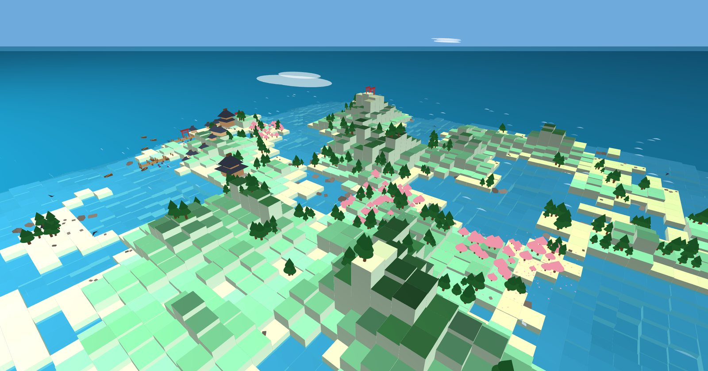
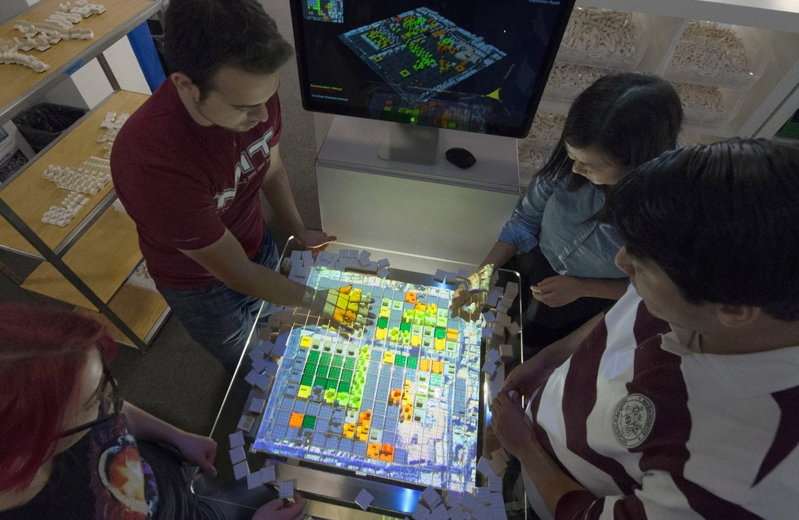
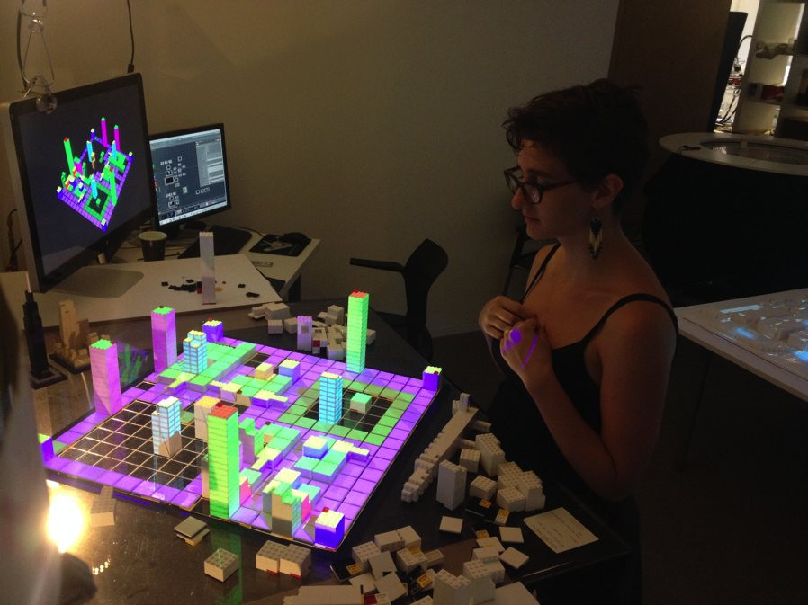

Ira Winder
Creative technologist and prototyper
- Los Angeles / Tokyo / Boston
- ira@mit.edu
- ira.mit.edu
- github.com/irawinder
Summary
I turn ambiguous ideas into working software, fast. For 13 years I have prototyped interactive systems that help people reason about complex problems, from MIT's CityScope tangible interface to live investor platforms.
Today I am the sole engineer behind Outliers Fund's digital infrastructure: 12 production applications and roughly 2,200 commits since 2025. In parallel, as Associate Professor at Chiba Tech's Henkaku Center, I designed and built Compass, a registry and governance platform for a new graduate school, and an AI-native capstone course. Both platforms are designed so people can work with their data through their own personal AI, not only through screens. I work end to end, from concept sketch and interaction design through backend, deployment and daily use.
Experience
Outliers Fund
2025 – presentCTO & Head of Research · Los Angeles / Tokyo
Designed, built and run the venture fund's whole digital stack as its only engineer: 12 production apps, about 2,200 commits.
- Platform backend (Nexus): FastAPI + PostgreSQL on AWS. Handles JWT auth, per-tool access grants, Plaid bank feeds, transactional email (SES) and a fund-accounting engine for capital accounts, fees, carry and quarterly statements. Built AI-ready: a documented REST API and per-user scoped logins let staff point their own AI assistant at fund data, so it can query and update records within that person's permissions.
- Outliers HQ: the internal operations portal for books, fund administration, LP records, deal pipeline and user admin. Includes a client-side scenario modeler for fund and per-LP returns.
- Investor Portal: where LPs see their capital accounts, statements and documents, scoped on the server per investor.
- Deal Room and Diligence Portal: SPV offerings with click-through NDA terms, plus a due-diligence workspace with checklists and signed reports.
- Public website and FundModel: outliers.fund and 12 interactive p5.js fund-model visualizations.
- Lead technical due diligence for the Outliers Scientific Fund and sit on its investment committee.
Chiba Institute of Technology, Henkaku Center
2024 – presentAssociate Professor · Narashino, Japan
- Co-founded the Graduate School of Design & Science (SDS), which opened April 2026. Lead research on human-coordination technology at the Henkaku Center for Radical Transformation.
- Designed and built Compass, the school's coordination infrastructure, plus the student portal and admin console that run on it.
- Built the public SDS website. Faculty, courses, curricula and publications are generated from the Compass registry with Python/Jinja2. When someone updates Compass, the site rebuilds automatically, so it never drifts from the source data.
- Designed APS-I (Antidisciplinary Project Studio I), an AI-native capstone studio co-taught with Joseph Austerweil. Students with no coding background build agent-based simulations by working with Claude Code.
- Teach Design & Prototyping (Master's) and Advanced Design and Prototyping (PhD): proto.chibatech.dev
- Contribute to the Henkaku Center website, and advised a student project visualizing Bell Labs' development of the transistor as a network of people and interactions (2025).
On Cue Design LLC
2015 – presentPrincipal · Cambridge, MA
- Build interactive simulations of complex systems for business planning, client engagement and education. Clients include Airbus, GSK, Walmart, Lend Lease and Gensler.
University of Tokyo, Graduate School of Frontier Sciences
2019 – 2024Special Project Researcher · Tokyo
- Led design and build of a lab-wide interactive simulation platform, so researchers could deploy their computational models as usable tools.
Massachusetts Institute of Technology
2013 – 2019Research and teaching roles · Cambridge, MA
- Media Lab, Changing Places Group — Research Scientist (2013 – 2017). Invented the Tactile Matrix (CityScope), a tangible platform that pairs real-time computation with projection mapping. Won and ran research contracts with GSK, Walmart and the Singapore Government.
- Urban Studies and Planning — Technical Instructor (2018 – 2019). Helped build the new Urban Science and Planning with Computer Science degree.
- Sociotechnical Systems Research Center — Research Associate (2018 – 2019). Built tools and experiments to study how teams solve problems in complex systems.
- UROP — Supervisor (2014 – 2019). Mentored many undergraduates in urban computation and HCI research.
- Aeronautics and Astronautics — Research Affiliate (2019 – present). Turn Engineering Systems Lab research into interactive simulations.
Earlier
Centre for Liveable Cities, Singapore (Affiliate, 2017 – 2018, pedestrian simulation) · Kobayashi Maki Design Workshop, Tokyo (Designer, 2008, 2010 – 2011) · Utile Design, Boston (Intern, 2009 – 2010, Boston Complete Streets Guidelines)
Selected Projects
Compass
2025 – presentHenkaku Center / SDS
Coordination infrastructure for an antidisciplinary graduate school. It makes people, projects, courses and governance visible and editable by anyone, not just engineers.
- A registry of 16 entity types (people, projects, courses, theses, events and more), shown as a navigable 3D network graph.
- Charter: a living governance document with an amendment and voting workflow.
- One shared FastAPI + PostgreSQL backend serves seven sites, including the SDS public website, student portal, admin console and course sites. About 950 commits.
- Built for personal AI from the start. With "Contribute with AI", anyone can load an onboarding guide into their own assistant (Claude Code, ChatGPT and others). They can then explore, query and edit the registry and draft charter amendments in plain conversation, no technical skills needed.
APS-I: Antidisciplinary Project Studio I
Spring 2026Chiba Tech SDS
An AI-native capstone course. The AI coding assistant is the medium students work in, not a banned shortcut.

- Every module is a self-contained project folder that students open with their AI assistant. The assistant walks them through the assignment and how to package it. No prior coding or terminal experience is assumed.
- Four phases cover environmental sensing (Bayesian inference), agents and decision-making (epsilon-greedy learning), emergence and multi-agent systems (a fishing-village commons), and digital fairness and institutional design. All are browser-based p5.js simulations.
- Assignments treat AI critically. In one, students debug "the AI's broken solution". Layered guardrails protect students' own reflective writing from AI ghostwriting.
- I built the onboarding, the shared simulation framework and world model, the tutorials, and the course site. About 400 commits.
Outliers Fund platform
2025 – presentA full-stack fund-operations system built and run by one person: accounting, LP reporting, investor and deal portals, and access control. Real investors and staff use it every day (details under Experience).
Tactile Matrix / CityScope
2014 – 2018MIT Media Lab


- An open-source tangible interface. Tagged physical blocks drive real-time simulation and 3D projection mapping, so stakeholders can collaborate around a table.
- Demonstrated for Bill Gates (Gates Ventures, 2018) and at the G7 ICT Forum (2016). Cited in PCAST's Technology and the Future of Cities report (2015). US provisional patent (2015).
- Won Best Project Demonstration at IEEE Future Technologies Conference (2017).
Interactive simulation for engineering systems
2013 – presentMIT AeroAstro / University of Tokyo
- Real-time simulations for exploring problems and comparing scenarios quickly, in domains like aerospace, pharma, logistics and pandemics. Advisor: Olivier de Weck.
Skills & Tools
- Prototyping
- Rapid prototyping, interaction design, tangible interfaces, AR and projection mapping, computer vision, sketching
- Front end
- JavaScript, HTML/CSS, p5.js, three.js, Processing/Java, Unity/C#
- Back end & infra
- Python, FastAPI, PostgreSQL, SQLAlchemy, Docker, AWS (EC2, SES), Plaid, GitHub Actions/Pages
- AI-native development
- Agentic coding workflows with Claude Code across a dozen-plus production repos
- Modeling
- Simulation, mathematical modeling, statistics, data visualization, GIS
- Making
- CAD (Rhino, Grasshopper), laser cutting, CNC, 3D printing, carpentry
- Languages
- English (native), Japanese (intermediate)
Publications
- Truong, Arnaud, Tamashiro, Winder, Costanzo & Xiao. MirrorMorphose: A Gaze-Diving Experience into the Past, the Other, and the Self. Proc. TEI '26: 20th International Conference on Tangible, Embedded, and Embodied Interaction, ACM, 2026. doi:10.1145/3731459.3779142
- Winder & Hiekata. Inclusive Interactive Simulation: Stakeholder Empowerment, Satisfaction, and Confidence in Solution Design and Decision Making. Product: Management and Development 21(1), 2023. doi:10.4322/pmd.2023.004
- Winder & Hiekata. Inclusive Interactive Simulation: Stakeholder Empowerment in Design. Proc. 30th ISTE Global Conference, Hua Hin, Thailand. IOS Press, 2023. doi:10.3233/ATDE230677
- Winder & Hiekata. Generic User Interface for Inclusive Interactive Simulation. Proc. 29th ISTE Global Conference, Cambridge, MA. IOS Press, 2022. doi:10.3233/ATDE220656
- Winder & Hiekata. User Interface Design for Multi-Objective Decision Making. Proc. 28th ISTE Conference (TE2021), IOS Press, 2021. doi:10.3233/ATDE210137
- Winder, Delaporte, Wanaka & Hiekata. Sensing Teamwork During Multi-objective Optimization. IEEE 6th World Forum on Internet of Things (WF-IoT), 2020. doi:10.1109/WF-IoT48130.2020.9221086
- Manandhar, Rong, Carroll, de Filippi, Winder, Dieffenbach & Moser. Sensing Systemic Awareness and Performance of Teams During Model-Based Site Design. IEEE 6th World Forum on Internet of Things (WF-IoT), 2020. doi:10.1109/WF-IoT48130.2020.9221406
- Chavy-Macdonald, Pelegrin, Wanaka, Winder & Moser. Field Guide for Interpreting Engineering Team Behavior with Sensor Data. Proc. Complex Systems Design & Management, Springer, 2018. doi:10.1007/978-3-030-04209-7_17
- Winder, Lutz & Chen. Evaluation Toolkit for Synchronous Collocated Collaborative HCI. Proc. MIT Systems Design & Management Symposium, 2018.
- Winder. Bits and Bricks: Tangible Interactive Matrix for Real-time Computation and 3D Projection Mapping. IEEE Future Technologies Conference, 2017. Best Project Demonstration.
- Nakagawa & Winder. Hurricane Evacuation Traffic Model. IEEE MIT Undergraduate Research Technology Conference (URTC), 2016. doi:10.1109/URTC.2016.8284092
- Leng, Noriega, Pentland, Winder, Lutz & Alonso. Analysis of Tourism Dynamics and Special Events through Mobile Phone Metadata. arXiv, 2016. arXiv:1610.08342
- Winder. System for Real-time Digital Reconstruction and 3D Projection-Mapping of Arbitrarily Many Tagged Physical Objects. US Provisional Patent, 2015.
- President's Council of Advisors on Science and Technology. Technology and the Future of Cities. Report to the President, pp. 73–75, 2015 (CityScope featured).
- Alrashed, Almalki, Aldawood, Alhindi, Winder, Noyman, Alfaris & Alwabil. An Observational Study of Usability in Collaborative Tangible Interfaces for Complex Planning Systems. Procedia Manufacturing 3, 2015. doi:10.1016/j.promfg.2015.07.243
- Winder. MIT Commuter Common: Measuring and Improving the Transportation Footprint of an Urban Institution. Master's thesis, MIT, 2013.
- Frenchman et al. Designing Clean Energy Cities: New Approaches to Urban Design and Energy Performance. Research and studio report, MIT and Tsinghua University, 2011.
- Winder. Complete Drawing Prototypes for Urban Complete Streets. Bachelor's thesis, MIT, 2010.
Talks
- Gates Ventures, Affordable Housing Workshop, Seattle — built and presented a tangible simulation for Bill Gates (2018)
- Keynotes: Prague City Data Congress (2019), MIT World Real Estate Forum (2018), US Chamber of Commerce Foundation (2015), Guiyang Big Data Expo (2015)
- Panelist, G7 Summit ICT Forum, Takamatsu (2016)
- Speaker, TEDxBoston (2014) and Autodesk University (2014)
Teaching
- Antidisciplinary Project Studio I (co-taught) and Design & Prototyping / Advanced Design and Prototyping, Chiba Tech SDS (2026)
- Computational Urban Science Workshop, MIT 11.S195 (2019)
- Urban systems prototyping studios, MIT Media Lab MAS.552J (2013 – 2014)
Education
- Massachusetts Institute of Technology — Master in City Planning, City Design and Development (2013). MIT Shell Energy Fellow.
- Massachusetts Institute of Technology — B.S. in Art and Design, Department of Architecture (2010). Phi Beta Kappa; Faculty Award for Achievement in Design; 1st Place, Velux Design Competition.
- University of Hong Kong — Exchange student, Faculty of Architecture (2009).